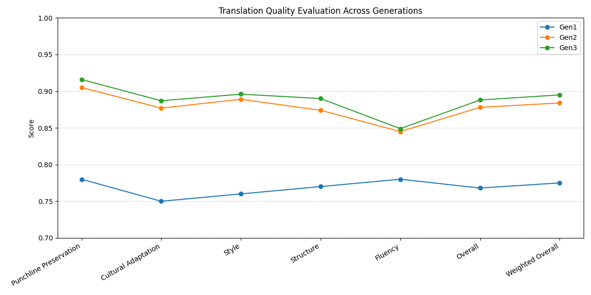

Chen Yana 24040011G
Project Link: https://github.com/yana108/Punchline-Pro
Project Introduction: https://youtu.be/cZmcV0pONMA?si=3pcdFekGDNNV6BZI
Punchline Pro is a breakthrough comedy translation tool focused on solving key deficiencies in traditional machine translation when handling cross-cultural humor content. Through the combination of large language models and innovative prompt engineering techniques, this project has achieved the following core results:
Punchline Pro is not only a technological innovation but also provides new possibilities for global cultural content exchange.
As global cultural exchange becomes increasingly frequent, stand-up comedy as a unique form of cultural expression has received widespread attention worldwide. However, traditional translation tools face severe challenges when dealing with comedy content: punchlines are often lost in translation, cultural differences cannot be effectively bridged, and the original performance style is difficult to preserve.
Effective translation of humorous content requires not only language conversion but also a deep understanding of cultural backgrounds and creative reconstruction. Especially the puns, cultural references, and context-specific jokes in stand-up comedy performances are the difficult points of traditional machine translation.
This report details the development process of the Punchline Pro comedy translation plugin, explaining how it overcomes the above challenges through connecting large language models and carefully designed prompt optimization strategies, achieving high-quality comedy translation that preserves the original style, and building a bridge for cross-language and cross-cultural humor content dissemination.
The main challenges of comedy translation include:
As pointed out by research in Feishu documents, AI, when processing language, often can only focus on the surface vocabulary and grammatical structure, making it difficult to delve into the level of emotions and context. The humor effect of a joke is often produced in a specific context, and separated from this context, the joke may no longer have the same effect 1.
This project aims to develop a translation plugin specifically for stand-up comedy videos—Punchline Pro, which can preserve the humor effect, cultural background, and performance style of the original text. Specific objectives include:
Our first version adopted a completely self-developed Chrome extension form, primarily focusing on real-time subtitle translation:
background.js and content.jsKey Limiting Factor: In real-time processing mode, each 3-5 minute segment might generate 50-80 API calls, both increasing costs and reducing translation quality. This fundamental architectural issue prompted us to seek new solutions.
(For detailed technical implementation, see Appendix A: Technical Details of Initial Plugin Version)
Facing the technical bottlenecks of the initial version, the project turned to secondary development based on open source translation plugins, achieving a more stable and efficient solution.
After evaluation, we chose the mature MouseTooltipTranslator open source project as the foundation for our underlying architecture. Although the original project was limited to calling YouTube's own translation function and presenting the results, its browser extension architecture provided us with a good starting point. Based on this, we conducted comprehensive rewriting and functional expansion:
Fundamental Reconstruction of Interception System: We independently developed two core files, subtitle.js and youtube.js, completely rewriting the subtitle interception and processing logic, upgrading from the original simple API call to a complete subtitle processing system.
Independently Developed XHR Interception Mechanism: Through the interceptCaption method, we achieved precise interception of YouTube subtitle requests, breaking through the limitation of the original project that only used ready-made translations:
static async interceptCaption() {
this.interceptorLoaded || (this.interceptorLoaded = !0,
this.interceptor.apply(),
this.interceptor.on("request", (async({request: e, requestId: t}) => {
try {
if (this.captionRequestPattern.test(e.url)) {
var n = await this.requestSubtitleCached(e.url),
i = this.setting.translateTarget,
s = this.guessSubtitleLang(e.url),
o = this.parseSubtitle(n, s);
// Independently implemented translation and processing logic
if (!1 === this.translate_setter) {
this.true_the_setter();
const t = e.url,
n = `youtube_sub_${(0,p.jI)(t)}`;
this.translated_subtitle = (0,p.tv)(n).data
}
var a = o;
if (s != i && "dualsub" == this.setting.detectSubtitle) {
var c = JSON.parse(JSON.stringify(o)),
u = this.replaceUtf8Sequentially(c, this.translated_subtitle);
a = this.mergeSubtitles(o, u)
}
e.respondWith(new Response(JSON.stringify(a), n))
}
} catch (e) {}
})))
}
While retaining the framework of the original project, we developed brand new functional modules for comedy content:
Independently Developed Bilingual Subtitle Fusion System: Completely rewrote the subtitle merging logic, achieving precise alignment and layout of original text and translated text through the original mergeSubtitles method, solving the context continuity problem in fast dialogues in comedy.
Subtitle Format Parsing and Reconstruction: Developed the parseSubtitle method, achieving complete parsing and reconstruction capability for YouTube subtitle formats:
static parseSubtitle(e, t) {
var n = [];
for (var r of e.events)
if (r.segs && r.dDurationMs) {
var i = r.segs.reduce(((e, t) => e + t.utf8), "").replace(/\s+/g, " ").trim();
0 == n.length || n[n.length - 1].tStartMs + n[n.length - 1].dDurationMs <= r.tStartMs ?
n.push({
tStartMs: r.tStartMs,
dDurationMs: r.dDurationMs,
segs: [{utf8: i}]
}) :
n[n.length - 1].segs[0].utf8 += i ? ` ${i}` : ""
}
return this.setSubtitle1({
events: n,
pens: [{}],
wireMagic: "pb3",
wpWinPositions: [{}, {apPoint: 6, ahHorPos: 20, avVerPos: 100, rcRows: 2, ccCols: 40}],
wsWinStyles: [{}, {mhModeHint: 2, juJustifCode: 0, sdScrollDir: 3}, {mhModeHint: 2, juJustifCode: 1, sdScrollDir: 3}]
})
}
AI Translation Integration: Based on the original project framework, we developed our own AI translation interface, integrating more advanced language models, optimizing translation in comedy-specific contexts through the Group_Translator and Single_Translator methods.
Video Metadata Analysis System: Added methods such as getYoutubeMetaData, getYoutubeMetaDataFromAPI, and getYoutubeMetaDataFromWatch, achieving in-depth parsing of YouTube video metadata, providing accurate contextual information for subtitle processing.
Through this comprehensive rewriting and customized development, while retaining the basic architecture of MouseTooltipTranslator, we built a highly specialized comedy translation system. This secondary development approach avoided the high cost of building from scratch while solving the problem that the original project, designed for general scenarios, could not meet the special needs of comedy through deep customization.
| Model Stage | Model Used | Pros and Cons | Main Challenges |
|---|---|---|---|
| Stage 1 | GPT-3.5 | Fast translation speed, low cost Average punchline preservation ability |
API quota limitations Unstable punchline translation quality |
| Stage 2 | GPT-4 | Strong cultural adaptation ability Good punchline preservation effect |
Higher cost Slow response speed |
| Stage 3 | DeepSeek-V3 | Good understanding of Chinese context High cost-effectiveness |
API regional limitations Limited personalized style capability |
| Final Solution | Multi-model mixed strategy | Dynamically selecting the most suitable model based on content characteristics | Complex model switching logic Need for more computing resources |
We developed a flexible model calling framework that can select the most appropriate model based on different translation needs and content characteristics:
class ModelSelector:
def __init__(self):
self.gpt35 = GPT35Translator()
self.gpt4 = GPT4Translator()
self.deepseek = DeepSeekTranslator()
def select_model(self, content, style, metadata):
# Select model based on content and style characteristics
if self._requires_high_cultural_adaptation(content):
return self.gpt4 # Use GPT-4 for high cultural adaptation needs
elif self._is_chinese_culture_heavy(content):
return self.deepseek # Use DeepSeek for Chinese culture intensive content
else:
return self.gpt35 # Use GPT-3.5 for general content
def translate(self, content, style, metadata=None):
# Select appropriate model
model = self.select_model(content, style, metadata)
# Build prompt
prompt = self._build_prompt(content, style)
# Call model and return result
return model.translate(prompt)
Example prompt templates for different translation styles:
def _build_prompt(self, content, style):
if style == "punchline_pro":
return f"""Translate the following comedy content into Chinese:
Focus on preserving punchlines and cultural context.
Content: {content}"""
elif style == "formal":
return f"""Translate the following comedy content into formal Chinese:
Content: {content}"""
# Other style prompt templates...
This approach combining model selection and prompt engineering allows us to fully leverage the strengths of each model while guiding them to generate high-quality translations that match the target style through carefully designed prompts.
The stability of translation services is a key factor for the success of the project, which went through the following optimization process:
Initial Solution: Using API services provided by SiliconFlow
Mid-term Exploration: Trying ChatAnywhere API (GitHub open source project)
Transition Solution: Adopting "Xianyu API" service
Final Solution: Volcano Engine API platform
We developed a complete stability guarantee mechanism to ensure continuous translation service even under unstable network conditions or API service fluctuations:
class APIStabilityManager:
def __init__(self, primary_api, fallback_apis):
self.primary_api = primary_api
self.fallback_apis = fallback_apis
self.cache = LRUCache(capacity=1000)
self.persistent_cache = SqliteCache("translation_cache.db")
def translate(self, text, retry_count=3):
# Memory cache check
if text in self.cache:
return self.cache[text]
# Persistent cache check
cached_result = self.persistent_cache.get(text)
if cached_result:
self.cache[text] = cached_result
return cached_result
# Primary API attempt
for attempt in range(retry_count):
try:
result = self.primary_api.call(text)
# Dual-layer cache storage
self.cache[text] = result
self.persistent_cache.set(text, result)
return result
except Exception as e:
if attempt == retry_count - 1:
break
time.sleep(0.5 * (attempt + 1)) # Backoff strategy
# Failure switch to backup API
for api in self.fallback_apis:
try:
result = api.call(text)
self.cache[text] = result
self.persistent_cache.set(text, result)
return result
except:
continue
# All APIs failed, using local backup translation
return self.local_fallback_translation(text)
This stability guarantee mechanism includes:
Dual-layer Caching System:
Intelligent Retry Mechanism:
Local Fallback Solution:
Through these comprehensive stability measures, we have significantly improved the reliability and performance of the translation service, providing users with a more stable and consistent experience.
Below is the technical and usage framework for the latest version of our translation plugin, built upon and heavily customized from MouseTooltipTranslator. The following diagram demonstrates the end-to-end data flow and component interaction within the plugin:
User Interaction:
Subtitle Retrieval:
Translation Pathways:
Prompt Engineering Module:
Large Model Interaction:
Subtitle Rendering & Caching:
The Prompt Engineering Module is the core intelligence layer of the translation system, enabling scalable style adaptation and personalization through two main components:
The Bilingual Subtitle Module handles the precise alignment and presentation of original and translated content through three core functions:
The Translation Quality Evaluation Module provides systematic assessment of translation quality through five key dimensions:
The evaluation module connects to the main system through:
The flexible and modular design of each system component—especially the prompt engineering module—not only provides a robust foundation for continued methodology-driven optimization, but also ensures that iterative improvements are grounded in comprehensive evaluation feedback. For detailed information on the scoring methodology and the evolution of our evaluation system that drive these optimizations, please refer to Section 6.
The foundation of our evaluation system is built upon a carefully curated dataset of 106 comedy segments, selected to represent diverse styles, cultural contexts, and comedic techniques. This dataset was developed through a rigorous process:
This rich annotation provides a solid foundation for training and evaluating the translation model, ensuring that the model can capture the performance styles and language characteristics of different comedians.
(For detailed datasets, see Appendix C_all_comedy_data.json)
Our first evaluation system relied on BLEU scores, which proved inadequate for comedy translation assessment:
(See Appendix B for more visualizing details of BLEU-based Evaluation.)
Recognizing BLEU's limitations, we developed a comprehensive five-dimensional evaluation framework:
The final evolution introduced a BERT-based model for efficient quality assessment:
# Example of BERT fine-tuning process
class ComedyEvaluator:
def __init__(self, model_name="bert-base-multilingual-cased"):
self.model = AutoModel.from_pretrained(model_name)
self.tokenizer = AutoTokenizer.from_pretrained(model_name)
def fine_tune(self, training_data, validation_data):
# Multi-task learning setup
tasks = ["punchline", "cultural", "style", "structure", "fluency"]
for task in tasks:
self._train_task_specific_head(task)
def evaluate(self, original_text, translated_text):
# Generate multi-dimensional scores
scores = {}
for dimension in self.evaluation_dimensions:
scores[dimension] = self._predict_dimension_score(
original_text,
translated_text,
dimension
)
return scores

The initial iteration of our prompt engineering adopted highly detailed system and user prompts encompassing every dimension critical to translating stand-up comedy: preservation of original humor, adaptation of cultural references, colloquial expression, translation brevity for subtitles, as well as explicit requirements for rhythm, punchline positioning, and cultural annotations. These elaborate instructions aimed to guarantee performance across all facets simultaneously. However, real-world deployment revealed significant issues: while translations often strictly adhered to the specified requirements, the output became verbose and mechanical, with excessive and sometimes intrusive cultural annotations (marked as 【】) disrupting subtitle flow and impairing overall audience experience. The one-size-fits-all approach struggled with the inherent flexibility and variety of comedy content.
Motivated by the shortcomings of the first generation, our second revision embraced a minimalist, style-oriented prompting paradigm. Prompts were distilled down to focus concisely on several key translation dimensions (e.g., retention of punchlines, cultural adaptation, fluency, and stylistic fidelity). For instance, the “punchline_pro” style simply instructed: “把以下脱口秀翻译成中文，注意以下五个维度：笑点保留度、文化适应度、风格保留度、结构完整度、语言流畅度.” This concise format proved highly effective: translation outputs became less burdened by redundant information, significantly improved subtitle naturalness and readability, and allowed for greater adaptability to different comedic genres or translation styles (formal, internet slang, classical, etc.). Audience perception and subjective evaluation indicated markedly improved comedy retention and viewing experience.
Building further on the simplified yet effective prompting framework, the final generation introduced personalized, comedian-specific strategies. For each major comedian or comedic archetype, prompt templates were meticulously customized to capture signature styles, rhetorical structures, and linguistic nuances. For example, the “Bill Burr Style” prompt was tuned to preserve layered structure, direct tone, and core satire; “Taylor Tomlinson Style” emphasized metaphorical logic and an uplifting yet critical undertone; while “Mike Epps Style” focused on raw, streetwise expression and authentic community rhythm. This allowed the translation system to accurately emulate a broad spectrum of comedic voices, faithfully conveying not only the surface content but also the deeper artistic identity and audience resonance of each performer.
Throughout all three phases, prompt refinements were tightly integrated with both automated evaluation metrics (e.g., BLEU, style consistency scoring) and comprehensive human review. Regular A/B testing between prompt versions measured humor retention, cultural resonance, fluency, and subtitle readability. Iterative reviewer feedback directly informed further prompt adjustments, ensuring the system aligned ever more closely with real user expectations and professional translation requirements.
Every methodological upgrade—spanning data selection, annotation, evaluation criteria, and most importantly, prompt engineering optimization—was continuously validated and refined based on scoring feedback in all five key dimensions. In Section 7, we systematically present quantitative results, qualitative analyses, and real-world outputs to assess the effectiveness of these optimizations.
All results and case analyses below are derived from the evaluation methodologies and experimental protocols described in Section 6, ensuring consistency and scientific validity across all findings.
The initial generation (Gen1) adopted prompts that intentionally encouraged contextual amplification and background annotation, intending to “bridge cultures” through exhaustive explanation. However, this approach produced several critical issues that undermined the comedic core and audience engagement:
Principal Observed Problems:
Gen1 Real-World Examples:
Original Punchline (context: a relatable joke about being tired after socializing):
Even more problematic, some outputs became academic or pseudo-sociological:
In certain instances, the AI hallucinated irrelevant local details and internal notes, as illustrated below:
Original: "Rice is rice."
Gen1 Output: Kanin ay kanin! (Pero alam niyo ba, mga kapamilya, dito sa Pilipinas... 不仅仅是‘饭’这么简单！有蒸的、煮的、还有虾酱拌的呢！所以在咱们说‘rice is rice’的时候，其实… HALA! 其实有很多隐藏含义呢！😄） (注：保留原句简洁幽默感，加入菲律宾饮食文化梗，用"kapamilya"拉近距离，表情符号增强娱乐性，最后用"HALA"制造喜剧效果但避免冒犯)
A classic punchline, intended to be quick, concise, and universal, was transformed into a meandering pseudo-lecture full of cultural digressions, secondary punchlines, and (sometimes bizarre) annotation—removing almost all of its original comic power.
Summary: These failures underscored the necessity for precise prompt control: less is more when subtitling comedy. The findings directly informed our Gen2 and Gen3 designs—shifting away from verbose “helpfulness” toward maximizing comedic timing, conciseness, and original intent preservation.
Learning from Gen1’s pitfalls, Gen2 and Gen3 introduced dedicated prompt engineering strategies focused on:
Table 1: Five-Dimensional Evaluation of Translation Quality
| Generation | Punchline Preservation | Cultural Adaptation | Style | Structure | Fluency | Overall | Weighted Overall |
|---|---|---|---|---|---|---|---|
| Gen1 | 0.78 | 0.75 | 0.76 | 0.77 | 0.78 | 0.768 | 0.775 |
| Gen2 | 0.905 | 0.877 | 0.889 | 0.874 | 0.845 | 0.878 | 0.884 |
| Gen3 | 0.916 | 0.887 | 0.896 | 0.890 | 0.849 | 0.888 | 0.895 |

Highlights:
To visualize the above changes, we present a direct comparison of outputs for key punchlines across the three generations:
| English Original | Gen1 (Verbose/Explanatory) | Gen2 | Gen3 |
|---|---|---|---|
| I lost 80% of my religion this year. | 今年我失去了80%的宗教信仰。 （近年来信仰流失成为社会现象） |
我今年“失宗教”了80%（现在看到神龛只鞠半躬） | 信了上帝后，我的宗教竟去了十之八九——看来真神面前，万法皆空啊。 |
| But I was lucky, my mom was the most gangster person you’d ever meet. | 我的妈妈可能是你一生中遇到的最黑帮的人。 （黑帮即指非常有魄力、强悍） |
但我很幸运，我老妈是你见过最彪悍的狠角色。 | 但我在成长过程中确实很幸运，因为我妈大概是最彪悍的主儿。 |
| We take their racism and shake it up with the love of Jesus. | 我们接受他们的种族主义，并用耶稣的爱来动摇它。 （文化多样性背景下...） |
我们用耶稣的博爱，把他们的偏见搅得天翻地覆。 | 把他们的种族歧视，摇进了耶稣之爱的灵魂鸡尾酒，大家干杯！ |
Analysis:
While Gen1 uniformly outputted verbose or literal subtitles, the upgraded system now supports multiple styles—standard, humorous, internet slang, classical, as well as simulations of 35 distinct comedian personas:
| Style/Persona | Translation Example |
|---|---|
| Standard | 我今年信仰少了八成。 |
| Punchline Pro | “失宗教”了80%（现在看到神龛只鞠半躬） |
| Classical Chinese | 今年宗教虔心减八成，神庭前只留半身敬。。 |
| Internet Slang | 宗教掉线80%，我都快成无神论发言人了。 |
| [Trevor Noah style] | 宗教信到一半直接跑路，剩下的佛祖都不敢吱声。 |
Reviewers and user surveys confirm that these stylistic dimensions improve both audience enjoyment and translation flexibility.
Classic automatic metrics such as BLEU did not accurately capture Gen2/Gen3’s progress in humor, punchline, or stylistic adaptation: human and multi-dimensional scoring were essential to reveal these qualitative leaps (see Appendix B).
Key Improvements:
Conclusion: Through three generations of system refinement, PunchlinePro evolved from over-explanation and lost humor to concise, idiomatic, and highly engaging comedy subtitles, approaching the performance of skilled human transcreators.
Future directions include automatic style recommendation, finer-grained adaptation for region/dialect, and real-time adaptive context modeling to further close the gap between native comedy and its translated counterpart.
See Appendix B for detailed quantitative evaluation tables and additional cases; see Appendix C for full dataset and scoring methodology.
[1] Pinch. (n.d.). A real-time translation tool for cross-country videoconferencing. Chief AI Sharing Circle. https://www.aisharenet.com/en/pinch/
[2] Anonymous Developer. (2025). Breaking the boundaries of large language models: Analysis of LLM limitations and an introduction to LangChain. CSDN. https://blog.csdn.net/2401_85343303/article/details/143817072
[3] Smartling. (n.d.). What to consider when evaluating machine translation quality? https://cn.smartling.com/blog/how-to-assess-machine-translation-quality
[4] Weglot. (n.d.). Improve translation quality: A complete guide. https://www.weglot.com/zh/guides/website-translation-quality
[5] Feishu Docs. (n.d.). Research on cultural adaptation of AI translation. https://qp6kkktqa2.feishu.cn/wiki/WzIswlEcFiArAKkcVDkcIIamneh
[6] Wu, H., & Lu, J. (2018). Comparative study on talk shows in China and America from hosting styles. International Journal of Humanities Social Sciences and Education (IJHSSE), 5(5), 42-48. https://www.arcjournals.org/pdfs/ijhsse/v5-i5/6.pdf
[7] Zhang, N. (2022). An exploration of the humorous language in talk shows. Jingu Cultural Innovation, 34, 92-94. https://doi.org/10.20024/j.cnki.CN42-1911/I.2022.34.030
[8] Translation of popular culture in American late-night talk shows from the perspective of contextual adaptation. (2024). Retrieved from https://www.docin.com/p-2290032623.html
[9] Eco-translatology’s explanation of verbal humour interpretation in stand-up comedy. (2023). Retrieved from https://d.wanfangdata.com.cn/thesis/ChhUaGVzaXNOZXdTMjAyNDA5MjAxNTE3MjUSCFk0MTgzMDY4Ggh6N3Bnd2lwbg%3D%3D
[10] Lai, B. (2023). A study on subtitle translation from the perspective of Skopostheorie—A case study of Desperate Housewives. Academic Journal of Humanities & Social Sciences, 6(3), 73-79. https://doi.org/10.25236/AJHSS.2023.060312
[11] Xie Jiahao. A Brief Analysis of the Language Characteristics and Communication Effects of Talk Show Actors. Frontiers in Art Research (2023) Vol. 5, Issue 1: 66-70. https://doi.org/10.25236/FAR.2023.050113.
[12] Hasan, M. K., Rahman, W., Zadeh, A., Zhong, J., Tanveer, M. I., Morency, L.-P., & Hoque, M. E. (2019). UR-FUNNY: A multimodal language dataset for understanding humor. Proceedings of the 2019 Conference on Empirical Methods in Natural Language Processing and the 9th International Joint Conference on Natural Language Processing (EMNLP-IJCNLP), 2046-2056. https://doi.org/10.18653/v1/D19-1211
[13] Ximena Gutierrez-Vasques, Christian Bentz, Tanja Samardžić; Languages Through the Looking Glass of BPE Compression. Computational Linguistics 2023; 49 (4): 943–1001. doi: https://doi.org/10.1162/coli_a_00489
[14] Pituxcoosuvarn, Mondheera and Murakami, Yohei, Jokes or Gibberish? Humor Retention in Translation with Neural Machine Translation vs. Large Language Model. Available at SSRN: https://ssrn.com/abstract=5148455 or http://dx.doi.org/10.2139/ssrn.5148455
[15] Wang, J., et al. (2024). Retrieval-Augmented Machine Translation with Unstructured Knowledge. arXiv preprint arXiv:2412.04342.